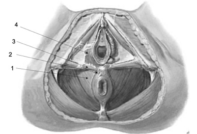
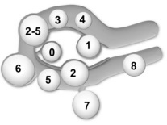
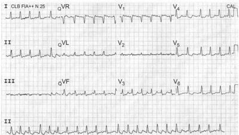
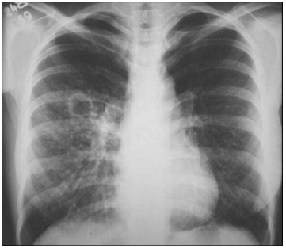
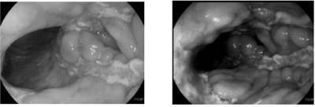

Questão 1 · Medicina Preventiva · Índice de Vulnerabilidade Social IVS · 4000137989O Atlas da Vulnerabilidade Social facilita a produção de análises e informações de uma região, sendo que.
A o índice de vulnerabilidade indica acesso, ausência ou insuficiência de 3 grandes conjuntos de “ativos”, os quais deveriam, a princípio, estar à disposição de todo cidadão.
B o bairro é a menor unidade político-administrativa avaliada, para cálculo do índice de vulnerabilidade.
C a escala de vulnerabilidade varia entre 0 e 1, em que 0 corresponde à situação ideal, ou desejável de renda acima de 10 salários mínimos.
D são compilados somente renda e trabalho, para cálculo do índice de vulnerabilidade.
E a renda familiar é o componente principal para a determinação da faixa de vulnerabilidade.
Questão 2 · Ensaios clínicos duplocegos randomizados · Medicina Preventiva · 4000137988Em um estudo foram recrutadas mulheres com risco de obesidade que, agrupadas por sorteio, receberam dois tipos distintos de intervenção: exercícios físicos regulares e dieta hipocalórica. Após 30 dias, o desfecho de perda de peso foi avaliado. Trata-se de estudo.
A retrospectivo transversal.
B clínico randomizado.
C caso-controle.
D observacional prospectivo.
E ecológico.
Questão 3 · NR6 Equipamento de Proteção Individual · 4000137987Dentre as medidas a serem implementadas para a prevenção e o controle da disseminação do SARS-CoV-2 em serviços hospitalares, a Agência Nacional de Vigilância Sanitária recomenda, em sua Nota Técnica GVIMS/GGTES no 04/2020, atualizada em 8 de maio de 2020, procedimentos e uso de Equipamentos de Proteção Individual (EPI). Recomenda-se que o profissional de saúde use a máscara N95/PFF2, ou equivalente,
A em áreas coletivas, em que não há procedimentos geradores de aerossóis, com pacientes com suspeita de COVID-19.
B em consultórios, durante realização de exame físico em pacientes com sintomas respiratórios.
C no quarto/área/enfermaria/box de pacientes suspeitos ou confirmados de COVID-19, durante a realização de procedimentos que possam gerar aerossóis.
D na área de triagem preliminar, em enfermarias com pacientes confirmados de COVID-19 durante assistência sem procedimentos que possam gerar aerossóis.
E no quarto/área/enfermaria/box de pacientes suspeitos ou confirmados de COVID-19, durante a assistência sem procedimentos que possam gerar aerossóis.
Questão 4 · Medicina Preventiva · Hierarquia das Evidências · O sistema GRADE · 4000137986Na medicina baseada em evidências (MBE) há recomendação.
A IIb para condições em que há evidências de consenso a favor do procedimento.
B IV para condições em que há evidências de que o procedimento é seguro e eficaz.
C I para condições em que há evidências conclusivas que o procedimento é seguro, útil e eficaz.
D III para condições em que há evidência não divergentes sobre segurança e eficácia do procedimento.
E IIa para condições em que há evidências de que o procedimento pode ser prejudicial.
Questão 5 · Medidas de Desempenho de Testes Diagnósticos ou Medidas de Perf ormance de Testes Diagnósticos · 4000137985Medicina Preventiva Em relação a testes diagnósticos:
A sensibilidade é a chance de um indivíduo estar doente quando o teste é positivo.
B sensibilidade é a capacidade do teste ser negativo em indivíduos que não apresentem a doença investigada.
C o valor preditivo positivo é a probabilidade de um indivíduo avaliado, e com resultado positivo estar, realmente, doente.
D o valor preditivo positivo é a capacidade de um teste detectar corretamente as pessoas com uma determinada doença.
E o valor preditivo negativo é a probabilidade do indivíduo avaliado, e com resultado negativo, estar doente.
Questão 6 · Outras Vigilâncias em Saúde · Sistemas de Inf ormação em Saúde SIS e Bases de dados do SUS · 4000137984Vigilância em Saúde A questão da administração abusiva de medicamentos em um paciente leucêmico é do escopo:
A da Secretaria de Vigilância em Saúde.
B da farmacovigilância.
C do nível de prevenção secundária.
D de hemovigilância.
E de tecnovigilância.
Questão 7 · Prevenção · 4000137983No Calendário Vacinal Nacional de 2020, do Ministério da Saúde, relativo à febre amarela, consta:
A adolescentes a partir dos 12 anos de idade, e adultos que receberam uma dose da vacina antes de completarem 12 anos de idade, têm indicação de reforço.
B pessoas com 60 anos ou mais devem ser vacinadas de rotina, independentemente da situação epidêmica do local onde vivem.
C o território nacional, como um todo, deixou de ser prioritário para a vacina contra febre amarela.
D indicação de primeira dose aos 6 meses de idade.
E recomendação de reforço da vacina aos quatro anos de idade.
Questão 8 · Indicações de rastreio da osteoporose · 4000137982De acordo com o documento (2017) da
A é indicada a mulheres com 50 anos ou mais, com exames de densitometria óssea, para prevenir fraturas osteoporóticas (evidência de nível B).
B é prioritária em mulheres com 50 anos ou mais.
C não se aplica a homens, pois a evidência é insuficiente para avaliar o equilíbrio de benefícios e danos para prevenir fraturas osteoporóticas.
D é prioritária em homens pós andropausa.
E é indicada a mulheres na pré-menopausa, com idade inferior a 50 anos, e com risco aumentado de osteoporose mostrado em exames de densitometria óssea (evidência de nível B).
Questão 9 · Tratamento da Hipertensão arterial · 4000137981O tratamento não medicamentoso da hipertensão arterial envolve modi cações no peso corporal e na ingestão alimentar e, segundo a Sociedade Brasileira de Cardiologia, uma recomendação é.
A manter circunferência abdominal < 60 cm nas mulheres e < 80 cm nos homens.
B restringir o consumo diário de sódio para 5,0 g, ou seja, 12 g de cloreto de sódio.
C perda de 50% de peso ponderal, com redução em 20% a 30% da pressão arterial.
D eliminar o consumo de álcool para redução de pressão sistólica (3,31 mmHg) e pressão arterial diastólica (2,04 mmHg).
E adoção da dieta DASH −
Questão 10 · Sistema de Inf ormação de Agravos de Notif icação SINAN · 4000137980Dados sobre a doença causada pelo coronavírus (COVID-19) podem ser acessados pelos Boletins Epidemiológicos Especiais do Ministério da Saúde do Brasil, nos quais.
A não se consegue verificar o número de óbitos em profissionais de saúde.
B há carência de figuras para visualização gráfica da situação epidemiológica nos estados e cidades.
C as informações da situação epidemiológica nos estados e cidades são atualizadas quinzenalmente.
D há informações sobre a situação epidemiológica da COVID-19 no mundo e no Brasil.
E são indicados os números de casos de Síndrome Respiratória Aguda Grave por COVID-19, sem dados sobre outras causas.
Questão 11 · Intercorrências obstétricas obstetrícia patológica · 4000137979Primigesta de 27 anos de idade, com 39 semanas, em início de trabalho de parto. Refere tosse seca e mal-estar há 5 dias. A temperatura é de 37,2 ºC, a frequência respiratória é de 24/min, a saturação de oxigênio é de 96%. Não tem alterações de ausculta pulmonar e a vitalidade fetal é adequada. O colo é pérvio para 1 cm, e há dinâmica uterina regular, de fraca intensidade. A pesquisa de SARS-CoV-2 é positiva em swab nasal por RT-PCR. É recomendado.
A internação em unidade de terapia intensiva para monitoração e inibição do trabalho de parto até negativação do PCR.
B introduzir corticoide para manutenção do quadro respiratório materno e para maturação fetal, e indicar cesárea após 24 horas, se não houver evolução do parto.
C indução de parto com misoprostol para abreviar o tempo de trabalho de parto.
D monitorar rigorosamente os parâmetros fetais e maternos e aguardar a evolução do trabalho de parto.
E indicar cesárea nesse momento, em que os parâmetros respiratórios maternos estão adequados.
Questão 12 · Préeclâmpsia com sinais de gravidade · Obstetrícia · 4000137978É considerado fator de gravidade na pré-eclâmpsia:
A plaquetopenia inferior a 210.000/mm³.
B nivel sérico de creatinina maior que 1,1 mg/dL.
C dor persistente em baixo ventre.
D proteinúria maior que 500 mg em 24h.
E pressão diastólica igual ou maior que 100 mmHg.
Questão 13 · Classif icação FIGO · 4000137977Mulher de 45 anos de idade, IIIG, IIIP (3 cesárias) refere aumento do uxo menstrual há cerca de 1 ano. Refere que o uxo dura 8 dias, com coágulos nos 3 primeiros dias, e tem intervalo regular de 28 dias. Também apresenta cólicas moderadas durante o uxo. O exame especular mostra mácula rubra facilmente sangrante ao redor do orifício externo do colo, com cerca de 1 cm. O toque vaginal evidencia útero globalmente aumentado 2 vezes de volume, endurecido, móvel, indolor. A ultrassonogra a mostra: miométrio heterogêneo difusamente, nódulo hipoecoico subseroso séssil de 1 cm, zona juncional aumentada, volume de 290 cm³. Ovário direito com formação anecoica de 20 mm. Ovário esquerdo sem alterações. Líquido livre em pequena quantidade na pelve. Pela classificação PALM-COEIN de sangramento uterino anormal (SUA), essa paciente se enquadra em.
A SUA-O, pelo distúrbio ovulatório causado provavelmente pelo cisto anexial.
B SUA-E, por possível doença inflamatória pélvica, evidenciada pelo líquido livre na cavidade.
C SUA-A, caracterizado pelo miométrio heterogêneo e zona juncional aumentada.
D SUA-L, pela identificação do nódulo hipoecogênico de 1 cm.
E SUA-M, pela mácula rubra sangrante, com indicação de biópsia para confirmação.
Questão 14 · Fase ativa · O trabalho de parto e o parto · 4000137976Gestante, 27 anos de idade, primigesta, encontra-se com 34 semanas de gestação. Em consulta de pré-natal de rotina, quer se preparar para o trabalho de parto e conhecer detalhes da assistência ao parto de baixo risco. Deve-se informar, corretamente, que.
A se recomenda massagem perineal durante o segundo período do parto.
B se considera trabalho de parto estabelecido quando a dilatação cervical é de pelo menos 4 a 6 cm, acompanhada de contrações uterinas regulares.
C se considera terceiro período do parto prolongado após decorridos 60 minutos do nascimento.
D o acompanhamento do trabalho de parto pode ser realizado por médico obstetra ou enfermeira obstétrica, que devem escutar o batimento cardíaco fetal a cada duas horas.
E a duração normal da fase ativa do segundo período do trabalho de parto nas primíparas sem analgesia é de uma a cinco horas.
Questão 15 · Tratamento cirúrgico · 4000137975Considere as seguintes situações clínicas: I. Paciente de 32 anos de idade com câncer de mama ductal invasivo não especial que fará quadrantectomia. II. Paciente de 58 anos de idade com carcinoma de mama in situ unilateral em área de microcalci cações de 2 cm de extensão, que fará setorectomia. III. Paciente de 72 anos de idade com nódulo axilar de 2 cm cuja punção por agulha na evidenciou carcinoma ductal invasivo. Indica-se a biópsia de linfonodo sentinela na(s) situação(ões) clínica(s) descritas em.
A II e III, apenas.
B I, apenas.
C I, II e III.
D I e II, apenas.
E I e III, apenas.
Questão 16 · Anatomia do Assoalho Pélvico · 4000137974Considere a imagem esquemática dos músculos do assoalho pélvico feminino, indicados pelos números de 1 a 4. O nome e o respectivo número dos músculos incisados quando se realiza episotomia mediolateral direita, durante a aplicação de fórcipe são:

A bulboesponjoso (3) e coccígeo (2).
B levantador do ânus (1) e bulbocavernoso (4).
C coccígeo (2) e transverso profundo do períneo (3).
D feixe puborretal (1) e feixe isquiorretal (2) do levantador do ânus.
E bulbocavernoso (4) e transverso superficial do períneo (3).
Questão 17 · Miomatose uterina · 4000137973Mulher, 43 anos de idade, refere dores pélvicas, dispareunia de profundidade e sangramentos menstruais volumosos. Realizou ressonância magnética que evidenciou vários nódulos uterinos, ilustrados e numerados de 0 a 8 na imagem abaixo, conforme a classificação dos miomas da Federação Internacional de Ginecologia e Obstetrícia. Nesse caso, o(s) nódulo(s)

A 2 a 5 são totalmente intramurais e não interferem no padrão de sangramento menstrual.
B 1 é subseroso com mais de 50% acometimento intramural e pode ser assintomático.
C 8 é conhecido como parasitário e pode ocasionar dispareunia de profundidade.
D 3 é intramural com mais de 50% de acometimento submucoso, porém não ocasiona sangramento irregular.
E 6 é submucoso com mais de 50% de acometimento intramural e pode ocasionar dores pélvicas.
Questão 18 · Vulvovaginites · 4000137972Em relação às vulvovaginites:
A A vaginite aeróbica é diagnosticada pela coloração de Gram e dosagem de interleucina B diminuída.
B A vaginite atrófica ocorre com frequência em mulheres que fazem antibioticoprofilaxia para infecção urinária.
C O tratamento da vaginose bacteriana é realizado com ampicilina via oral e corticoide via vaginal por 7 dias.
D A vaginite atrófica acomete puérperas e usuárias de contraceptivos hormonais e é tratada com progesterona natural por pelo menos 30 dias.
E Os agentes etiológicos mais comuns da vaginite aeróbica são
Questão 19 · Abortamento · Intercorrências obstétricas obstetrícia patológica · Obstetrícia · 4000137971Em relação aos sangramentos genitais que podem acometer a gestante,
A o descolamento corioamniótico, a neoplasia trofoblástica gestacional e vasa prévia são as principais causas de sangramento da primeira metade da gestação.
B o sangramento ocasionado pelo descolamento prematuro da placenta costuma ser insidioso e indolor.
C o descolamento prematuro da placenta, o abortamento tardio e a placenta prévia são as principais causas de sangramento da segunda metade da gestação.
D os principais fatores de risco para placenta prévia são cesárea anterior, miomectomia e curetagem uterina.
E o descolamento corioamniótico é diagnosticado por meio de ultrassonografia e o tratamento é feito com progesterona e anti-inflamatórios.
Questão 20 · Classif icação · Planejamento f amiliar · 4000137970Mulher, 18 anos de idade, apresenta vida sexual e gostaria de um método contraceptivo hormonal para melhora da dismenorreia secundária. Em relação aos métodos contraceptivos hormonais, nesse caso, a melhor opção é o.
A anel vaginal liberador de etinilestradiol e etonogestrel, pois apresenta menor risco tromboembólico do que os progestogênicos isolados orais.
B injetável mensal, pois combina o etinilestradiol com a medroxiprogesterona e pode ser aplicado via intramuscular ou subcutânea.
C dispositivo intrauterino liberador de levonorgestrel, pois atua no espessamento do muco cervical.
D implante subcutâneo liberador de etonogestrel, pois age bloqueando a ovulação por pelo menos 5 anos.
E contraceptivo oral com progestagênio isolado, pois mantém padrão de sangramento regular em 90% das usuárias.
Questão 21 · Cuidados neonatais · Pediatria · Neonatologia · 4000137969Recém-nascido, lho de mãe diabética com 38 semanas, parto cesárea por macrossomia fetal e cardiotocogra a não tranquilizadora, apresenta Apgar 9/10 e peso 4.020 g. A complicação mais esperada para esse bebê no período neonatal, dentre as abaixo, é:
A cardiomiopatia hipertrófica.
B anemia hemolítica.
C hipotensão arterial.
D nefrocalcinose.
E hipermagnesemia.
Questão 22 · Pediatria · Vitaminas · 4000137968Mariah, de 24 meses de idade foi desmamada há uma semana. Sua família optou por uma dieta vegana, ou seja, sem leite, sem ovo e sem nenhum tipo de carne. Está em acompanhamento com a nutricionista e a família oferece uma dieta variada e balanceada. O nutriente que deve ser prescrito para que Mariah tenha suas necessidades nutricionais satisfeitas é.
A vitamina B12.
B retinol.
C tiamina.
D ferro.
E ácido fólico.
Questão 23 · Diagnóstico dif erencial · Pediatria · Doença de Kawasaki · 4000137967A Síndrome In amatória Multissistêmica em crianças e adolescentes associada à COVID-19 apresenta manifestações clínicas similares às observadas em crianças com.
A Púrpura de Henoch- Schönlein.
B Doença de Kawasaki.
C Eritema Nodoso.
D Síndrome Hemolítica-Urêmica.
E Doença de Lyme.
Questão 24 · Pediatria · Eritema Inf eccioso · 4000137966Paciente, sexo feminino, 3 anos de idade, é levada ao pediatra com história de manchas avermelhadas em face e posteriormente em tronco e extremidades. Negava febre e anorexia. Ao exame físico encontrava-se em bom estado geral e afebril com presença de eritema malar bilateral e exantema máculo-papular de aspecto rendilhado em tronco e extremidades proximais, poupando a palma das mãos e a planta dos pés. O agente etiológico mais provável deste quadro clínico, dentre os abaixo, é:
A Parvovírus B19.
B Citomegalovírus.
C Paramixovírus.
D Epstein-Barr vírus.
E Adenovírus.
Questão 25 · Síndrome nef rótica · 4000137965Um menino de 2 anos e 7 meses de idade foi internado por apresentar edema generalizado. A anamnese e o exame físico revelam urina espumosa e edema insidioso, frio, depressível e periorbitário, aumentando progressivamente durante o dia. O exame laboratorial MENOS esperado para esta criança, dentre os abaixo, é
A pressão arterial dentro dos limites normais.
B hipocomplementemia.
C relação proteína/creatinina urinária de 2,5 mg/mg.
D albumina sérica de 1,9 g/dL.
E proteinúria de 50 mg/m²/hora.
Questão 26 · Pediatria · Programa Nacional de Imunizações · 4000137964Cecília, de 8 meses e 20 dias de idade foi levada à Unidade Básica de Saúde para atualizar as vacinas. Conversando com a mãe e checando a carteirinha de vacinação, concluiu-se que Cecília tinha tomado as seguintes vacinas: Nascimento: BCG e contra Hepatite B. 2 meses: Pentavalente (contra difteria, tétano, coqueluche, Haemophilus in uenzae tipo b e hepatite B), VIP (vacina inativada contra poliomielite), pneumocócica 10 valente e contra o rotavírus. 3 meses: vacina meningocócica C. Depois disso, não recebeu nenhuma outra vacina, porque sua mãe cou com medo de sair de casa por causa da pandemia de COVID-19. O melhor esquema vacinal para ser aplicado em Cecília, nesse momento é:
A Pentavalente, VOP, pneumocócica 23 valentes, meningocócica C, febre amarela e contra a influenza.
B Pentavalente, VIP, Rotavírus, pneumocócica 10 valente, meningocócica C e contra a influenza.
C Pentavalente, VIP, pneumocócica 10 valente, meningocócica C e contra a influenza.
D Pentavalente, VIP, Rotavírus, pneumocócica 23 valente, meningocócica C, febre amarela e contra a influenza.
E Pentavalente, VOP (vacina oral contra a poliomielite), Rotavírus, pneumocócica 10 valente e meningocócica C.
Questão 27 · Pediatria · Gráf icos OMS Classif icação nutricional · 4000137963Na consulta de 4 anos de idade, Susi pesou 17,8 kg (escore-z entre 0 e +1), mediu 99 cm (escore-z entre −1 e 0). O escore- z do peso para estatura e o do IMC estavam entre +1 e +2. Segundo o Ministério da Saúde, a classificação nutricional de Susi é.
A eutrofia.
B magreza.
C obesidade.
D sobrepeso.
E risco de sobrepeso.
Questão 28 · Of idismo · 4000137962Um adolescente de 14 anos de idade, morador em zona rural, foi levado ao pronto-socorro por acidente ofídico. O animal foi identificado e não possuía fosseta loreal, apresentando anéis coloridos (pretos, brancos e vermelhos). O tipo de ação esperada do veneno nesse acidente, dentre os abaixo, é.
A coagulante.
B anticoagulante.
C neurotóxica.
D proteolítica.
E miotóxica.
Questão 29 · Pediatria · Anaf ilaxia · 4000137961Criança de 5 anos de idade é atendida com queixa de apresentar, 30 minutos após a ingestão de alimentos, alterações cutâneas, com placas eritematosas elevadas, acompanhadas de estridor laríngeo. O primeiro medicamento, dentre os abaixo, a ser administrado para essa criança é:
A anti-histamínico endovenoso.
B epinefrina intramuscular.
C corticosteroide endovenoso.
D nebulização com adrenalina.
E vasopressina intranasal.
Questão 30 · Aspectos Clínicos · Pediatria · Sarampo · 4000137960Uma criança do sexo masculino, 3 anos de idade, apresenta quadro clínico compatível com sarampo. A complicação, dentre as abaixo, que tem maior probabilidade de ocorrer como complicação nessa criança é
A encefalite aguda.
B orquiepididimite.
C intussuscepção.
D pneumonia.
E panencefalite esclerosante.
Questão 31 · Cirurgia · Vias Aéreas Def initivas Não Cirúrgicas · 4000137959Complicação mais frequentemente associada à intubação orotraqueal de urgência, em doentes críticos:
A Intubação esofágica.
B Barotrauma.
C Aspiração.
D Pneumotórax.
E Fístula traqueoesofágica.
Questão 32 · Doação e transplante de órgãos e tecidos · 4000137958Em relação à doação de órgãos e tecidos, é correto afirmar:
A Responsáveis legais devem assinar termo de consentimento para um paciente ser doador vivo.
B O estímulo à doação através da mídia social é ilegal.
C Os doadores vivos devem ter, no mínimo, 18 anos.
D Incentivos financeiros podem afetar a decisão de membros da família para permitirem a doação.
E Doadores vivos podem receber compensação financeira, desde que livremente negociada.
Questão 33 · Anatomia e Semiologia dos Membros Inf eriores · 4000137957O canal dos músculos adutores, pelo qual passam artéria e veia femorais, é delimitado pelos músculos
A sartório, vasto medial, adutor longo e adutor magno.
B grácil, vasto medial, adutor magno e semitendinoso.
C grácil, sartório, vasto intermédio e adutor longo.
D vasto medial, sartório, semimembranoso e semitendinoso.
E semimembranoso, semitendinoso, grácil e sartório.
Questão 34 · Tratamento Cirúrgico · Cirurgia · 4000137956Um homem de 63 anos queixa-se de jato urinário fraco, noctúria e esforço miccional. A ultrassonogra a de trato urinário constatou bexiga espessada com divertículos e próstata de peso estimado em 80 gramas. Foi indicada ressecção transuretral de próstata, com alça de ressecção com energia monopolar. Ainda durante a cirurgia, sob sedação e anestesia espinhal, passou a apresentar náuseas, confusão mental, agitação, bradicardia e cefaleia. Diagnóstico provável dessa complicação e melhor conduta:
A Intoxicação por anestésicos / Hemostasia, encerrar a cirurgia e reversão da anestesia.
B Choque hipovolêmico por sangramento / Hemostasia, encerrar a cirurgia, expansão volêmica e transfusão de concentrado de hemácias.
C Perfuração vesical / Tamponamento endoscópico até estabilização.
D Perfuração vesical / Exploração cirúrgica imediata por laparotomia, com cistorrafia.
E Intoxicação hídrica / Hemostasia, encerrar a cirurgia e tratamento clínico.
Questão 35 · Anestesia do Neuroeixo · Proctologia · Ef eitos Adversos e Complicações · 4000137955Um homem de 56 anos, sem morbidades significativas, está no pós-operatório imediato de hemorroidectomia à Milligan- Morgan. Refere muita dor em hipogástrio, que não melhora com analgésicos. Temperatura: 37,1 °C, pulso: 120 bpm, PA: 140 × 90 mmHg. No exame do abdome, nota-se massa em hipogástrio, dolorosa à palpação. A descompressão brusca é negativa. Recebeu já enoxaparina profilática. Diagnóstico mais provável e conduta:
A Bexigoma pela anestesia. Consulta de urgência com urologista, por provável prostatismo.
B Impactação fecal associada à dor pós-operatória. Fleet enema.
C Hematoma pélvico, possivelmente associado à enoxaparina. Tomografia de abdome e pelve, com contraste intravenoso.
D Hematoma pélvico, possivelmente associado à enoxaparina. Repouso, analgesia e suspensão da profilaxia antitrombótica.
E Bexigoma associado à anestesia e analgesia. Sondagem vesical de alívio.
Questão 36 · Prof ilaxia do Tromboembolismo Venoso · Cirurgia · 4000137954Um homem de 33 anos, tabagista e obeso mórbido, está no primeiro pós-operatório de sutura de úlcera duodenal, feita por via aberta. Melhor opção de profilaxia antitrombótica:
A Meias elásticas e heparina diária; aguardar 48 horas para iniciar a deambulação.
B Repouso no leito e meia elástica inicialmente; deambulação e uso de enoxaparina daqui a três dias.
C Meias elásticas, deambulação e enoxaparina.
D Deambulação; aguardar ainda 48 horas para iniciar enoxaparina.
E Medidas não farmacológicas inicialmente e heparina apenas após a alta hospitalar.
Questão 37 · Complicações PósOperatórias · Hérnias Ventrais · Cirurgia · 4000137953Um senhor de 41 anos, tabagista e obeso mórbido, está no quarto pós-operatório de reoperação, por evisceração após colectomia direita, por neoplasia de cólon. Na reabordagem, não foi observada deiscência da anastomose e a cavidade abdominal estava limpa. Foi deixado um dreno sobre a tela de polipropileno. Débito diário do dreno: 200 mL no primeiro dia, 180 mL no segundo dia, 130 mL no terceiro dia e 100 mL nas últimas 24 horas. O aspecto do líquido drenado tornou-se progressivamente mais seroso. A respeito do tratamento e da evolução desse paciente, é correto afirmar:
A Por se tratar de reabordagem, o dreno só deve ser retirado quando o débito for praticamente nulo.
B A melhor opção seria ter utilizado tela em posição
C A colocação de tela não modifica o risco de hérnia pós-operatória.
D Por se tratar de reabordagem, a tela deveria ser de material absorvível.
E A drenagem está dentro do esperado. Provavelmente o dreno poderá ser retirado quando o débito for inferior a 50 mL/dia.
Questão 38 · Trauma Cervical · Cirurgia · 4000137952Um homem de 24 anos foi vítima de ferimento por arma branca em região cervical. Tem a via aérea pérvia e saturação de O2 de 96%, em ar ambiente. Está consciente e orientado (Glasgow 15). Pulso: 90 bpm, rítmico, PA: 130 × 90 mmHg, frequência respiratória: 18 irpm. Queixa-se de dor em região cervical. A endoscopia digestiva alta e o esofagograma mostraram laceração de 1/3 da circunferência esofágica, com extravasamento de contraste. Conduta, além de analgesia, antibioticoterapia sistêmica e vacinação antitetânica:
A Tratamento não operatório, jejum oral, internação em terapia intensiva e passagem de sonda nasoenteral guiada por endoscopia.
B Cervicotomia exploradora, sutura do esôfago, drenagem e passagem de sonda nasoenteral durante a operação.
C Tratamento não operatório, jejum oral, monitorização em terapia intensiva, gastrostomia, traqueostomia e seguimento radiológico.
D Cervicotomia exploradora com sutura primária da lesão esofágica e faringostomia para alimentação.
E Via aérea cirúrgica e tomografia de pescoço e tórax. A endoscopia não deveria ter sido feita, por poder piorar a lesão esofágica.
Questão 39 · Dieta · Ressuscitação Volêmica · Controle Álgico · 4000137951Uma mulher de 23 anos, obesa, com 15 semanas de gestação, é internada por dor epigástrica irradiada para o dorso, náuseas e vômitos, há 2 dias. Está em bom estado geral, desidratada, eupneica, anictérica e afebril. Pulso: 90 bpm, PA: 110 × 80 mmHg. O abdome é globoso e doloroso à palpação de epigástrio. Hemoglobina: 11 g/dL, leucócitos: 17.500/mm3, amilase: 860 U/L, gama- glutamiltransferase: 30 U/L, fosfatase alcalina: 30 U/L, AST (aspartato aminotransferase): 25 U/L, ALT (alanina aminotransferase): 24 U/L e bilirrubinas totais: 1,3 mg/dL. O ultrassom mostra microcálculos em vesícula biliar, sem dilatação de vias biliares. É feito o diagnóstico de pancreatite aguda biliar. Classificação da pancreatite quanto à gravidade e conduta inicial para essa paciente:
A Leve. Tratamento clínico e observação, sem antibiótico e sem outros exames de imagem.
B Moderada. CPRE (colangiopancreatografia retrógrada endoscópica).
C Leve. Recomendável antibioticoterapia profilática, por se tratar de gestante.
D Gravidade ainda indeterminada. Antibioticoterapia empírica.
E Grave (leucocitose). Ressonância nuclear magnética, por causa da gestação.
Questão 40 · Nutrição em Cirurgia e Recuperação PósOperatória · Complicações PósOperatórias · Cirurgia · 4000137950Um homem de 35 anos está no segundo pós-operatório de sutura de úlcera gástrica, com patch de omento. Ainda não foi realimentado após a operação. Refere dor abdominal de intensidade 7, em escala analógica de 0 a 10. Está com náuseas. Pulso: 110 bpm, PA: 110 × 70 mmHg, temperatura: 37,2 °C. O abdome está um pouco distendido e é doloroso difusamente, mas a descompressão brusca é negativa. Pelo dreno abdominal saíram 600 mL de líquido bilioso nas últimas 24 horas. Conduta mais adequada no momento:
A Endoscopia para confirmação da provável deiscência da sutura e planejamento cirúrgico.
B Nova abordagem cirúrgica.
C Tomografia de abdome com contraste oral, para confirmar a suspeita diagnóstica.
D Nutrição parenteral e observação clínica rigorosa, com jejum, sonda gástrica aberta e antibioticoterapia, reservando-se possível reabordagem cirúrgica para o caso de apresentar piora clínica.
E Jejum, sonda nasogástrica aberta e antibioticoterapia. Fazer tomografia para diagnóstico e drenagem de eventuais coleções não contempladas pelo dreno.
Questão 41 · Cardioversão elétrica · 4000137949Paciente de 76 anos, sexo masculino, com antecedente de hipertensão e apneia do sono, deu entrada no pronto-socorro por quadro de palpitações taquicárdicas há 4 dias. Sinais vitais: PA: 140 × 90 mmHg, FC: 132 bpm, FR: 16 ipm e SatO2: 97% em ar ambiente. O paciente realizou ECG abaixo. Diante do quadro clínico do paciente e da análise do ECG, o diagnóstico mais provável e a melhor conduta:

A Flutter atrial. Adenosina venosa e, se não responder, cardioversão.
B Fibrilação atrial. Amiodarona EV e, se não responder, cardioversão elétrica.
C Flutter atrial. Cardioversão elétrica e anticoagulação via oral.
D Taquicardia supraventricular. Manobra de valsalva e, se não responder, adenosina venosa.
E Fibrilação atrial. Ecocardiograma transesofágico e cardioversão, se ausência de trombos.
Questão 42 · COVID 19 · 4000137948Sobre o tratamento da COVID-19, é correto:
A A análise preliminar do estudo ACTT-1 demonstrou que o Remdesivir reduziu de forma estatisticamente significativa o tempo, internação e a mortalidade em pacientes internados com comprometimento pulmonar.
B A Sociedade Internacional de Trombose e Hemostasia recomenda anticoagulação terapêutica para todos os pacientes hospitalizados.
C A cloroquina e a hidroxicloroquina são opções terapêuticas eficazes e isentas de efeitos colaterais.
D O uso de dexametasona reduziu a mortalidade em pacientes internados que necessitavam de oxigênio suplementar, em special naqueles que se encontravam em ventilação invasiva.
E A ventilação não invasiva pode ser utilizada e não adiciona riscos para a equipe assistencial.
Questão 43 · Síndrome Colinérgica · Psiquiatria · 4000137947Paciente sexo masculino, 45 anos, agricultor, foi levado ao pronto-socorro por quadro de fraqueza, diarreia, hipersalivação, vômitos há duas horas. Sinais vitais: PA: 110 × 70 mmHg, FC: 52 bpm, FR: 24 ipm, SatO₂ : 93% em ambiente. Ao exame físico, pupilas mióticas, sibilos e roncos à ausculta pulmonar e presença de fasciculações. Diante do quadro clínico, o diagnóstico mais provável e seu tratamento:
A Síndrome colinérgica. Atropina, pralidoxima e suporte clínico.
B Síndrome colinérgica. Inibidor da acetilcolinesterase, diazepam e suporte clínico.
C Gastroenterocolite aguda. Hidratação venosa, antieméticos e dieta obstipante.
D Síndrome anticolinérgica. Atropina, pralidoxima e suporte clínico.
E Síndrome anticolinérgica. Inibidor da acetilcolinesterase, diazepam e suporte clínico.
Questão 44 · Tuberculose pulmonar primária · Esquema básico RIPE RHZE · 4000137946Paciente sexo feminino, 36 anos, moradora de área livre, foi em consulta na UBS, referindo que está cursando com perda de peso importante, tosse e sensação de febre, mais ao final da tarde. Seus sintomas começaram há duas semanas. Foi, então, encaminhada para realização de radiografia de tórax, mostrada abaixo. O diagnóstico mais provável e seu tratamento:

A Abscesso pulmonar. Amoxicilina com clavulanato por 14 dias.
B Tuberculose pulmonar. Rifampicina + isoniazida + pirazinamida + etambutol por 2 meses, seguidos de pirazinamida e isoniazida por mais 4 meses.
C Abscesso pulmonar. Amoxicilina por 7 dias.
D Tuberculose pulmonar. Rifampicina + isoniazida + pirazinamida + etambutol por 2 meses, seguidos de rifampicina e isoniazida por mais 4 meses.
E Tuberculose pulmonar. Rifampicina + isoniazida + pirazinamida + etambutol por 6 meses.
Questão 45 · Acidentes Vasculares Cerebrais AVC · Neurologia · 4000137945Tratamento da Fase Aguda do Acidente Vascular Cerebral Isquêmico Paciente sexo feminino, 72 anos, hipertensa e diabética, deu entrada no pronto-socorro com quadro de desvio de rima labial para direita e hemiparesia à esquerda, que começou há 2 horas da admissão. Os sinais vitais da entrada eram PA: 175 × 105 mmHg, FC: 82 bpm, FR: 14 ipm, SatO₂ : 95% em ar ambiente. Paciente realizou tomografia de crânio conforme imagem abaixo. O diagnóstico provável e a melhor conduta:

A Acidente vascular cerebral hemorrágico. Trombólise química, se não houver contraindicações.
B Acidente vascular cerebral hemorrágico. Craniectomia descompressiva.
C Acidente vascular cerebral isquêmico. Trombólise química, se não houver contraindicações.
D Acidente vascular cerebral isquêmico. Transferência para UTI e depois trombólise química.
E Acidente vascular cerebral isquêmico. Craniectomia descompressiva.
Questão 46 · Poliarterite nodosa PAN · 4000137944Vasculite de pequenos e médios vasos, que acomete predominantemente homens, entre 40 e 60 anos. Febre é a manifestação clínica inicial mais comum e a poliartrite é assimétrica, não deformante, das grandes articulações de membros inferiores. Sem tratamento, a doença é progressiva com hipertensão grave e insu ciência renal crônica. Até 30% dos casos apresentam positividade sérica para os antígenos de superfície HbSAg e Anti-Hbs do vírus da hepatite B. As características descritas são relativas a.
A crioglobulinemia.
B púrpura Henoch-Schönlein.
C poliarterite nodosa.
D arterite de Takayasu.
E granulomatose de Wegener.
Questão 47 · Manejo da Nef ropatia diabética · 4000137943Resultado de hemograma com Hb: 8,5 g/dL, VCM: 83 fL, CHCM: 32 pg, reticulócitos: 1%, ferro sérico: 40 130 mmol/L, saturação de transferrina 22%, ferritina: 410 ng/mL é compatível com a seguinte condição:
A Policitemia vera.
B Doença celíaca.
C Esferocitose hereditária.
D Câncer colorretal.
E Nefropatia diabética.
Questão 48 · Doença de Crohn · Diagnósticos Dif erenciais · 4000137942Paciente de 20 anos, sexo masculino, admitido no pronto-socorro com quadro de diarreia líquida, mucossanguinolenta, associada a dor abdominal em fossa ilíaca direita, febre alta não aferida e perda de 8 kg nos últimos 4 meses. Nega náuseas ou vômitos. Tio com antecedente de doença intestinal. Ao exame físico se encontra em REG, descorado ++/IV+, desidratado +/IV. À palpação abdominal apresenta plastrão em fossa ilíaca direita, sem sinais de irritação peritoneal. Exames laboratoriais iniciais evidenciam Hb: 9,2 mg/dL, VCM: 75 , leucócitos: 14.900 mil/mm³, plaquetas: 670.000 mg/dL. TC de abdome demonstra espessamento colônico difuso, hipercaptação de contraste em mucosa colônica. Colonoscopia com os achados abaixo: Provável diagnóstico e tratamento adequado da doença relatada acima:

A Amebíase, devido à alta prevalência de parasitoses no Brasil − metronidazol.
B Doença de Crohn − pulsoterapia e sulfassalazina.
C Retocolite ulcerativa − corticosteroide associado a derivados do ácido 5-aminossalicílico.
D Doença de Crohn − combinação de imunossupressor com terapia biológica.
E Linfoma − tratamento sistêmico com a combinação dos quimioterápicos FOLFOX.
Questão 49 · Tratamento · Aplicação Clínica · 4000137941Paciente sexo feminino, 76 anos, está internada na UTI por quadro de in uenza. Encontra-se sob sedação em ventilação mecânica. A paciente tem 160 cm, com peso predito de 52 kg. Os parâmetros do ventilador mecânico são: modo controlado a pressão, FR: 15, PEEP: 8, FiO₂: 40%, tempo inspiratório de 1,0, pressão inspiratória de 15, volume corrente: 340 mL. A gasometria arterial: pH: 7,30, PO₂: 75, PCO₂: 52, SatO₂: 92%, BIC: 26. A melhor opção com ajustes no ventilador mecânico para diminuir a PCO₂ e aumentar a PO₂, respectivamente,
A aumentar a pressão inspiratória − diminuir FiO2.
B aumentar a frequência respiratória − aumentar a PEEP.
C diminuir o tempo inspiratório − aumentar FiO2.
D aumentar pressão inspiratória − diminuir a frequência respiratória.
E diminuir a pressão inspiratória − aumentar a PEEP.
Questão 50 · Endocrinologia · Critérios diagnósticos de síndrome metabólica · 4000137940A Síndrome Metabólica é uma condição que está associada a um aumento no risco de doenças cardiovasculares e cerebrovasculares. NÃO é critério diagnóstico: Respostas: 1 12 23 34 45
A Triglicerídeos ≥ 150 mg/dL.
B LDL > 130 mg/dL.
C HDL < 40 mg/dL em homens e HDL < 50 mg/dL em mulheres.
D Pressão arterial sistólica ≥ 130 mmHg ou diastólica ≥ 85 mmHg.
E Glicemia de jejum ≥ 110 mg/dL.